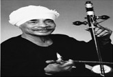
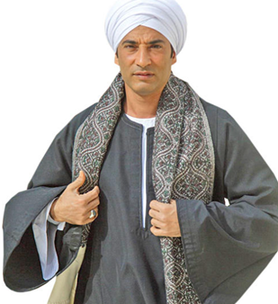
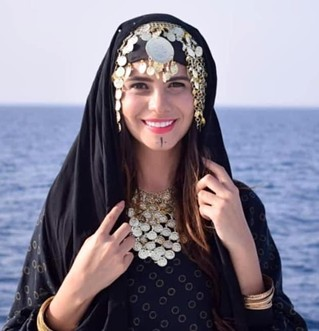
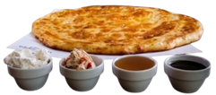
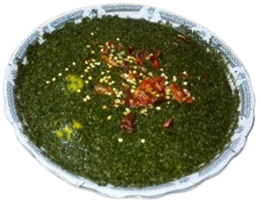
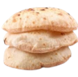
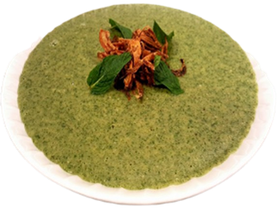
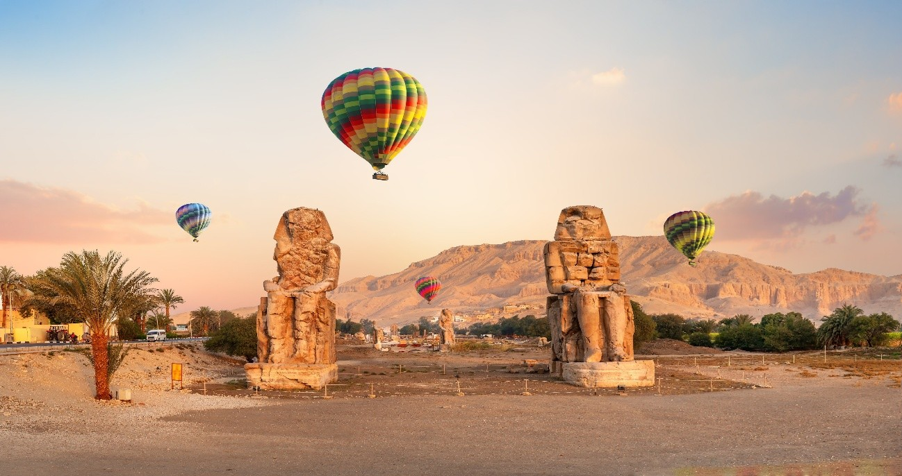
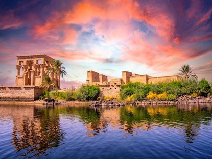

What makes Egypt truly unforgettable isn’t just its ancient pyramids, golden deserts, or the timeless Nile—it’s her people. And among them, the Sa’idis of Upper Egypt stand out, making up nearly 35% of Egypt’s 106.6 million people. The Sa’idis are more than just a demographic. They are the heartbeat of a region that has shaped Egypt’s history, traditions, and spirit.
In this article, we’ll take you deep into the world of the Sa’idis beyond the stereotypes, revealing their unique way of life, traditions, and the warmth that makes them unforgettable. Ready to meet the soul of Upper Egypt?
Map 1: Regions of ancient Egypt
The Sa’idi Identity: Language, Culture, and Tradition:
The term Sa’idi , comes from the Arabic word Sa’id , meaning “upper,” referring to the elevated terrain of Upper Egypt. Over time, the term Sa‘idi has come to represent not just the people of this region but also their distinctive dialect, traditions, and way of life.
Life in Upper Egypt unfolds at a slower pace, deeply connected to the land and the Nile. Many Sa’idis are farmers, cultivating crops like sugarcane, wheat, and dates. Family is central to Sa’idi life, and you’ll often find multiple generations living under one roof. Respect for elders and strong community ties are hallmarks of Sa’idi society.
I. The Sa’idi Dialect:
Sa’idi dialect often sounds shorter and more aggressive than Cairene Arabic. It is not uniform across all cities and villages of Upper Egypt. Each region has its own unique linguistic flavor, with variations in vocabulary, pronunciation, and even certain expressions. For instance, a word commonly used in one village might be entirely unfamiliar or carry a different meaning in another. Despite these regional differences, the Sa’idi sub-dialects share several key characteristics that tie them. For example, the letter qaf (ق ). While in Cairene Arabic it’s softened to an alf (أ), Sa’idis pronounce it as a hard “g” so the word pen becomes galam (قلم ) in Sa’idi dialect instead of qalam in formal Arabic or alam as in Cairene Arabic. Check out (Video 1) that shows the difference between Cairene and Sa’idi Arabic in speaking!
Video 1: Different Egyptian dialects
Video LinkII. Sa'idi Weddings:
Sa'idi weddings are a dazzling display of tradition, music, and dance, reflecting the region's rich cultural heritage. In some Sa'idi weddings, it's not uncommon to see celebratory gunfire, a tradition symbolizing joy and festivity.
Song translation:
The one whose father is Sa'idi fears nothing.
Oh people, here they come!
The Sa'idis are here—watch them arrive and dance!
A Sa'idi is always a leader.
Because he was raised well.
Judge, lawyer, doctor, pilot, officer, and engineer.
People of generosity, true men.
In business, they are fair and just.
They are the ones who built Egypt, my father.
No matter how high a Sa'idi rises, he never forgets his roots.
No matter how much God blesses him, he never forgets his family and people.
He knows how to dream and make his dreams come true.
Video 2: Sa'idi weddings
III. Music and Dance in Sa'idi Weddings
1. Music:
Music is the heartbeat of a Sa'idi wedding. Sa'idi music is known for its bold, rhythmic beats and powerful lyrics. It often carries themes of pride, honor, and resilience, reflecting the values of Upper Egypt's people. Some of the most common instruments include the Rababa, Mizmar, Jabla, and Tabl Baladi. One of the most famous modern representations of Sa'idi music is Methal Kenawy (Figure 1).
Figure 1: Methal Kenawy - Sa'idi musician
2. Dance:
Dance is an integral part of Sa'idi weddings, bringing energy, artistry, and cultural pride to the celebration.
- Tablib (Stick Dance): A traditional dance performed by men using long wooden sticks. It's both a symbol of masculinity and a display of skill, often performed at festivals and weddings.
- Sa'idi Dance: A traditional dance performed by women, often featuring strong, earthy movements, cane twirls, and vibrant Sa'idi dresses.
Video 3: Traditional Sa'idi dance performance
3. Clothes:
- Men often wear the galabia, a long, flowing robe made from cotton or linen, perfect for the region’s warm climate. During weddings and festivals, galabia is often accessorized with a turban and scarf. 
- Women’s traditional attire is equally striking, featuring brightly colored dresses with elaborate embroidery and beadwork. The Sa’idi dress is often paired with a headscarf or tarha, adorned with coins or beads that jingle with every movement, adding a musical element to their dance along with jewelry, such as bracelets and necklaces. 
Figure 2: Traditional men clothes
Figure 3: Traditional women clothes
IV. Sa’idi Cuisine:
Food in Upper Egypt is a way of bringing people together. Meals are often shared family-style, with large platters placed in the center of the table. Hospitality is a cornerstone of Sa’idi culture, and it’s not uncommon for visitors to be invited into homes for a meal. If you’re offered a seat at the table, consider it an honor and an opportunity to experience the warmth of Sa’idi hospitality.
Must-Try Sa’idi Dishes:- Feteer Meshaltet (Figure 4): Feteer can be served sweet (with honey, powdered sugar, or nuts) or savory (filled with cheese, minced meat, or vegetables). 
- Al-Shalhoulou (Figure 5): It’s a cold soup made primarily from water, molokhia (jute leaves), garlic, lemon, and salt. It’s often eaten with baladi bread. 
- Bessara (Figure 6): It’s a cold soup made primarily from water, molokhia (jute leaves), garlic, lemon, and salt. It’s often eaten with baladi bread 
Figure 4
Figure 5
Figure 6
Upper Egypt is home to some of the country’s most historic and culturally rich cities.
- Luxor: Known as the world's greatest open-air museum, Luxor is a must-visit for history lovers. Home to the Karnak Temple, the Valley of the Kings, and Luxor Temple. 
- Aswan: Known as the Jewel of the Nile with its peaceful Nile views, Nubian villages, Abu Simbel Temples, and the majestic Philae Temple (Figure 8),Aswan offers a blend of history, culture, and natural beauty. 
- Minya: offers a mix of Pharaonic, Coptic, and Islamic history. It’s where you’ll find Beni Hassan tombs (Figure 9), known for their vivid wall paintings, and Tuna El-Gebel, an ancient burial site. 
Figure 7: Colossi of Memnon, ancient statues guarding Luxor’s Theban Necropolis
Figure 8
Figure 9